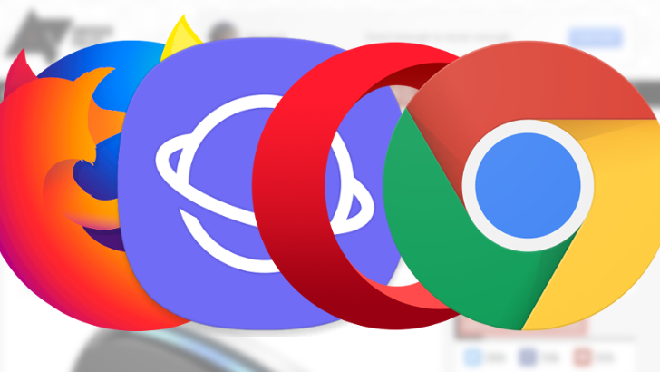

HOME
RESEARCH
BLOG
CURRICULUM VITAE
CONTACT US
Basic Internet Technologies
Scroll for more!
About Internet
The Internet is a global collection of computer networks connected by devices called routers, using a common set of data transmission protocols known as TCP / IP (transmission control protocol / Internet protocol). The Internet's primary purpose is to facilitate the information sharing. There are many different tools that are used on the Internet to enable this. Email, listservers, newsgroups, telnet, gopher, FTP, and the worldwide web are some of the more common tools. The worldwide web possibly is the most common of all Internet resources.
World Wide Web(WWW):
The World Wide Web (WWW), commonly known as the Web, is an information system in which documents and other web resources are defined through Uniform Resource Locators (URLs such as https:/www.example.com/), which can be interlinked via hypertext and are available via the Internet.WWW resources are distributed via the Hypertext Transfer Protocol (HTTP) and can be accessed by users through a HTTP protocol.
- BROWSER
- HYPERRTEXT AND HYPERMEDIA
- HTML
- URL
- HTTP
- HOMEPAGE
- CLIENT AND SERVER
Browser
A browser, short for web browser, is a software application for locating, retrieving and displaying content on the World Wide Web, including web pages, images, video and other files. The browser as a client / server model is the client running on a computer or mobile device that contacts the Web server and asks for information
Hypertext and Hypermedia
Hypertext is text which contains links to other texts.HyperMedia is a term used for hypertext which is not constrained to be text: it can include graphics, video and sound.
HTML
 HTML is the standard markup language for creating Web pages.
It describes the structure of a Web page and consists of a series of elements,
these elements tell the browser how to display the content.
The elements are represented by tags
HTML tags label pieces of content such as "heading", "paragraph", "table", and so on
Browsers do not display the HTML tags, but use them to render the content of the page
HTML is the standard markup language for creating Web pages.
It describes the structure of a Web page and consists of a series of elements,
these elements tell the browser how to display the content.
The elements are represented by tags
HTML tags label pieces of content such as "heading", "paragraph", "table", and so on
Browsers do not display the HTML tags, but use them to render the content of the page
URL
"URL" is an abbreviation for "Universal Resource Locator." Another name for a web address is the text you type in your browser when you want to go to a website.
HTTP
HTTP means HyperText Transfer Protocol.HTTP is the underlying protocol used by the World Wide Web and this protocol specifies how messages are structured and delivered, and what actions Web servers and browsers will take to respond to different commands.
Homepage
Also known as page and Web page. A document that serves as a starting point on a Web site. A home page typically contains hypertext and navigation buttons that allows the user to navigate the site by clicking them with a mouse and invoking hyperlinks to other pages and even other sites
Client and Server
If a device has installed a web browser, that is known as a client. A host machine which can supply information to others is called a server. A server requires special software to make Web documents available to others.
Impacts of Internet Technologies
Social skills
Excessive use of tech solutions would likely lead to poor social skills. Business meetings take place over Skype and children chat in messenger instead of calling on granny or meeting in person with a friend. On the face of it, technology seems to be building a global network that brings people together. But this actually substitutes real-life communication and ends in social isolation. In addition, strong social bonds are replaced in social networks by a number of shallow "friends"
.
Education
The Internet has become a formidable learning tool. Instead of wasting time in the library or completing the course online without going home, you can google any details you need. But interaction in tech doesn't always guarantee the quality of education. In the classroom, children sometimes overuse technology which obviously has a negative effect on the learning process. Plagiarism and cheating grew while analyzes and critical thinking declined. This puts the thinking skills of younger generations in jeopardy. Various studies say the less academically they achieve the more students use digital technology such as games or social media.
Physical effects
Of the technology's most dangerous effects is obesity. People who are absorbed by a laptop or tablet tend to snack a lot, keep up late hours and exercise less. The more time you sit in front of the PC, the lower the circulation of blood in your body, not to mention neck and headaches. In fact, sedentary life is the reason why many people have a curved backbone and the resulting bad posture.
Privacy and security
If being misused, technology can expose you to a number of risks. Especially vulnerable are kids. One in three teenagers reported having been victims of cyberbullying. To reach the target the offenders use text messages, social media or forums. The internet is now also where sex crimes are being committed online. Sex is another risky behavior to which teenagers may be exposed. 39% of teenagers admitted to sending sext messages, and nearly half of teenagers received nudity texts. It gives rise to cybercrime, with huge population using the Internet.
Mental health
One of the technology's most drastic impacts is the decrease in sleep quality and quantity. The continuous light from the windows affects the sleep chemicals melatonin. So keeping technology will probably interfere with your sleep and will affect your overall state. What's even more serious is that people become technology addicts. It affects the health and social life of the individual and breaks social and family relations.
METHODS TO REDUCE NEGATIVE EFFECTS OF TECHNOLOGY
Monitor and limit technology use. Understanding how much and in what way your child uses technology. A number of parental control tools have different screen time and content restrictions to be applied for gadgets for children. Consider using such software to set boundaries for the time allowed for the screen, as well as to view apps and web content.
Teach responsibility and behave consciously. Talk to your child about cyber privacy and potential hazards and risks. Simulate scenarios and explore online how to deal with problems. Explain possible consequences of misuse of conduct and system.
Keep up with the update on the technology industry. Take interest in current trends in digital media which are popular among young people. This will help early in identifying and solving the problems.
Find the technological alternatives. Encourage your child to read paper books, rather than electronic ones. Ask your child to indulge in a hobby, not an online game, like playing football. Organize a time with no electronic devices in the family. Be an example and remember that it is never too late to bring about positive changes in your child's life in order to avoid negative technological effects.